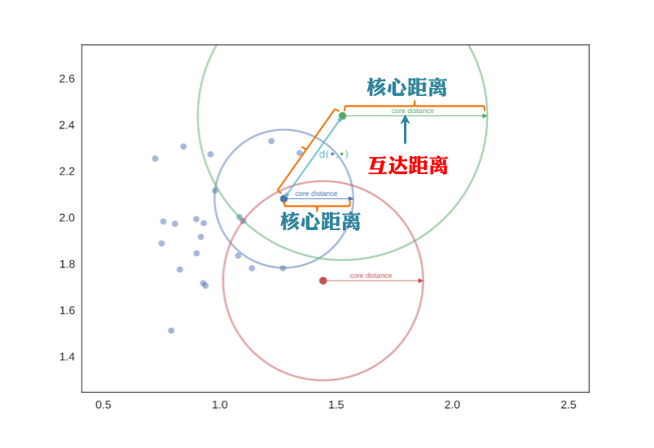
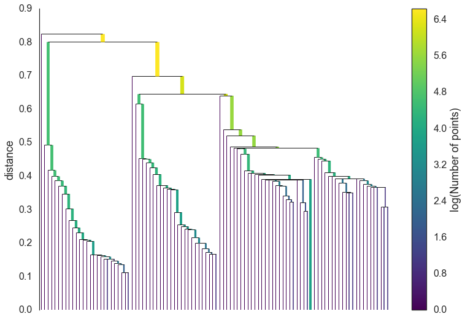
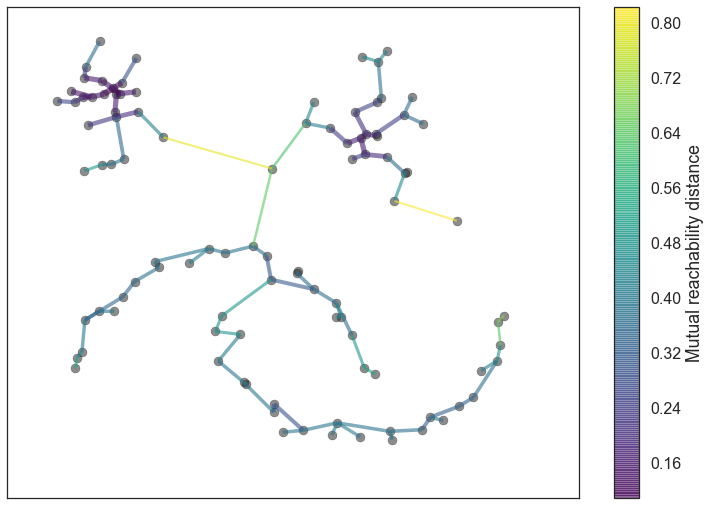
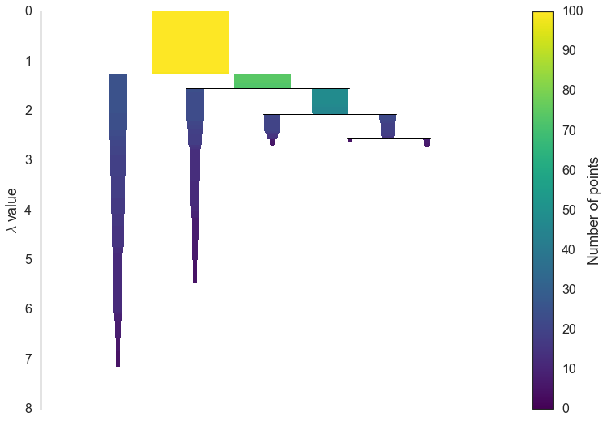
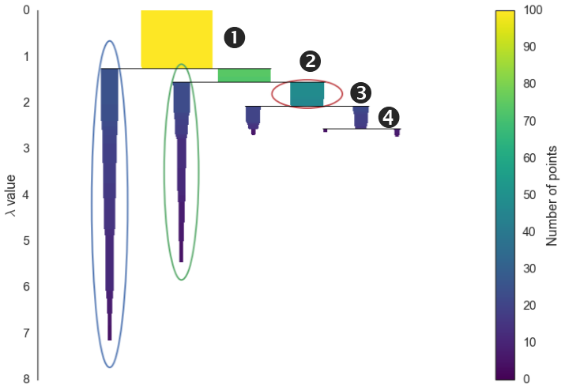
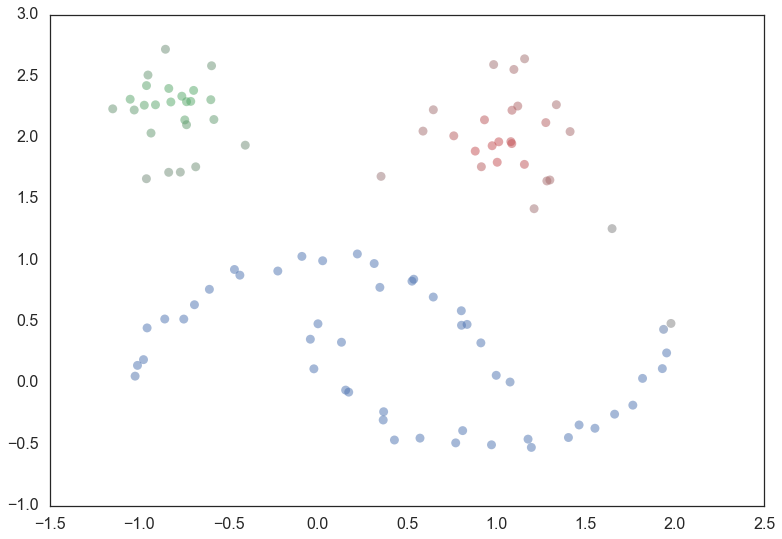

作者 Charles | 发布于 Jun 30, 2016
HDBSCAN
我们先定义几个基本概念，
- 核心距离corek(x)：
核心距离定义为当前点到其第k近的点的距离。

- 互达距离：mutual reachability distance
互达距离是由两者共同决定的。

最小生成子树
我们可以像谱聚类那样生成一个图，每个数据点作为图的一个顶点，边的权重设置为两顶点之间的互达距离。
假设有一个阈值ϵ，权重大于ϵ的边我们删除掉，随着阈值由大到小的变化，整个图的连通性会发生变化。每一个连通区域我们看做一个团簇的话，我们可以得到一个随ϵ变化的层次聚类结果。

最简单的想法是，每设置一个阈值，我们对图进行一次 connected components 判断，这样效率太低，实际上我们可以利用最小生成子树来达到我们的目的。
我们来简单分析一下，我们的目标是希望找到一个边的集合，我们删除这个集合里面的任何一条边，图的连通性都会发生变化（某个连通区域会分裂成两个连通区域），同时要确保权重最小的边可以连接分裂后的连通区域。最小生成树可以很方便帮我们达成目标。
The right thing to do is to find a minimal set of edges such that dropping any edge from the set causes a disconnection of components. But we need more, we need this set to be such that there is no lower weight edge that could connect the components. Fortunately graph theory furnishes us with just such a thing: the minimum spanning tree of the graph.

最小生成树
对于一个有n个点的图，最少需要n−1条边使得这n个点连通，由这n−1条边组成的子图则称为原图的生成树。
当图中的边具有权值时，总会有一个生成树的边的权值之和小于或者等于其它生成树的边的权值之和，这就是最小生成子树。

MST性质：
设一个带权无向图G(V,E,W) （V代表点集，E代表边集，W代表权值集），且T为G的一颗生成树，对于E中任意一条不属于T的边e，将其加入T中，会产生一条环（否则T不连通），如果e始终是环中权值最大的一条边，那么说明T满足MST性质。
提取团簇
观察层次聚类的结果，我们可以发现，在每个分裂点可能发生两种情况：
- 当前团簇分裂为两个子团簇
- 当前团簇分裂为一个大的团簇和几个离散点。
我们有必要定义下团簇的最小样本数，不妨假设minimum cluster size=5，我们现在过滤掉分裂过程中产生的离散点，可以得到下图，

我们先介绍几个基本概念：λbirth,λdeath,λp，
λbirth：团簇形成时的 λ 值
λdeath：团簇分裂为两个子团簇时的 λ 值
λp：点 p 从团簇中分离出去时的 λ 值
我们可以定义一个指标来衡量团簇的稳定性(stability)，
我们希望团簇稳定性越强越好，在团簇的每次的分裂中，如果分裂而成的两个子团簇的稳定性之和大于该团簇，那么我们就支持这次分裂，反之我们清除掉这次分裂，这样由叶子节点由下而上的遍历到根节点，可以选出所需的团簇，

看下结果图：
